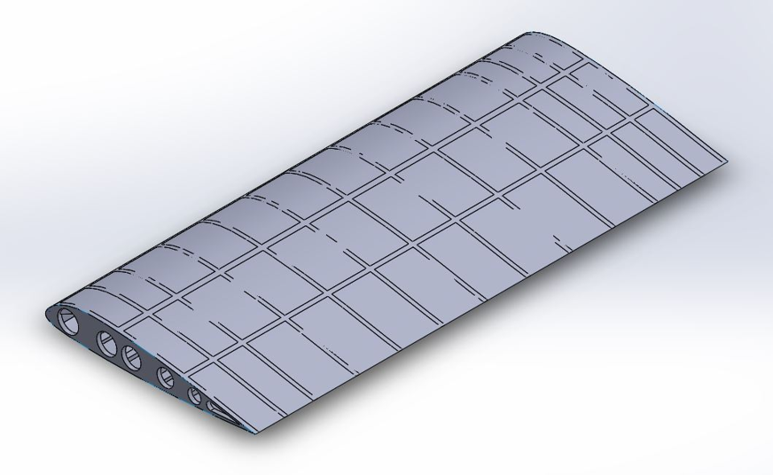

Performed finite element analysis on a simplified model of an ATR 72-600 aircraft wing to compare structural performance of aluminum alloys (Al 7075-T6, Al 6061-T6) and carbon fiber reinforced polymers (Carbon Epoxy UD, Carbon/Epoxy Composite).
Developed as a pre-final year mini-project to evaluate material suitability for aircraft wings under static and modal loading conditions, focusing on deformation, stress, strain, and vibration response.
Supervised by Dr. B C Ashok at the Department of Mechanical Engineering, Vidyavardhaka College of Engineering, Mysuru.
This mini-project involved creating a simplified 3D model of an ATR 72-600 wing using SolidWorks, based on approximate dimensions and a custom internal structure (ribs, spars, stringers, skin). CFD analysis in Ansys Fluent determined lift forces at cruise speeds (0.32 Mach and 0.41 Mach).
Static structural analysis evaluated total deformation, equivalent stress, and strain for four materials under these loads. Modal analysis assessed vibration characteristics. Results showed Carbon Epoxy UD as having superior properties, though the study noted limitations in real-world manufacturing feasibility.
As an undergraduate exercise, the project focused on learning FEA workflows rather than precise aircraft replication. The internal design was conceptual, and conclusions were based on simulation data without physical validation.